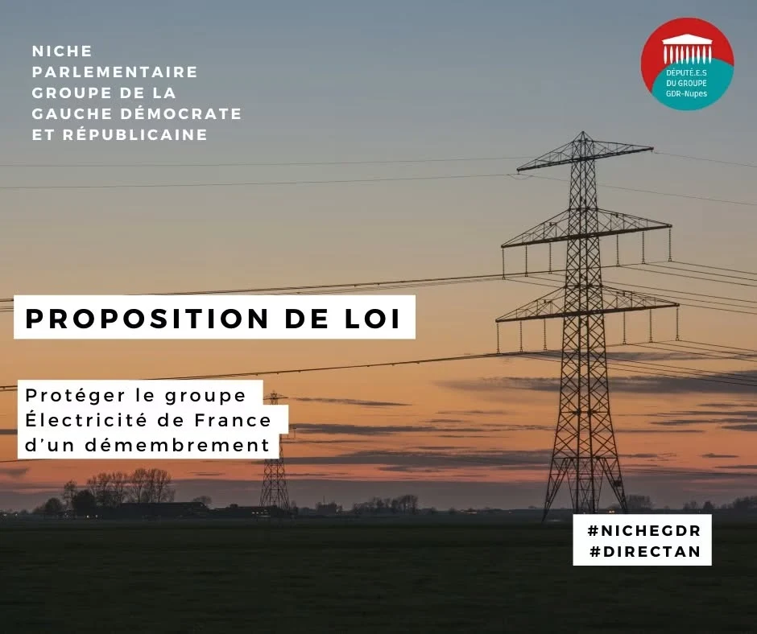

Publication relayée par le PCF 79
Les députés communistes défendent la maîtrise publique de l’énergie
Date de mise à jour indiquée par Facebook · 26 avril 2023
Texte de la publication · Les députés communistes
La proposition de loi que nous avons choisi d’inscrire à l’ordre du jour le 4 mai dresse le bilan de 20 ans de libéralisation pour parvenir à un constat : Il n’y a pas de souveraineté énergétique possible sans maîtrise publique.
Depuis plus de 20 ans, EDF, le pilier de notre indépendance énergétique, a été sacrifié par les Gouvernement successifs au fil des injonctions de la Commission européenne, avec de lourdes conséquences sur ses finances, ses salariés, ses savoir-faire, ses outils industriels.
La proposition de loi adoptée en première lecture visant à protéger EDF de tout démembrement est une première pierre vers une reprise en main de la politique énergétique par la puissance publique. C'est la raison pour laquelle nous avons choisi de l'inscrire à l'ordre du jour de notre niche parlementaire du 4 mai.

Sources
Les députés communistes · publication relayée par le PCF 79 · bibliothèque Facebook · AR-0002-FB-01676
À lire aussi · La journée d’initiative parlementaire du 4 mai annoncée en vidéo